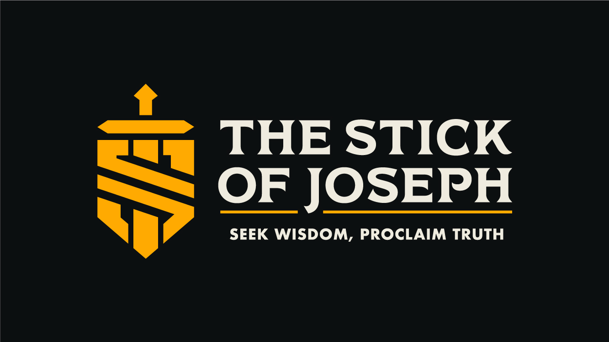

The Stick of Joseph is a podcast and media project dedicated to tackling life's hardest faith questions with honesty, compassion, and courage. Your gift makes every episode, event, and resource possible — and keeps it free for everyone.
Every dollar given to the Holy Scripture Research Foundation goes directly to funding the production, translation, and free distribution of The Stick of Joseph — bringing honest, courageous faith conversations to seekers and believers around the world.

The Stick of Joseph gave me a safe space to ask the hard questions I was too afraid to bring up anywhere else. Each episode feels honest, compassionate, and uplifting — it helped me rediscover hope in my faith journey.
Hear directly from the creators of The Stick of Joseph about the mission, the message, and why your support makes every episode possible.
As a 501(c)(3) non-profit ministry, the Holy Scripture Research Foundation exists to make The Stick of Joseph possible and to share it freely with the world. Your charitable donations are tax-deductible to the extent allowed by your country of residence.